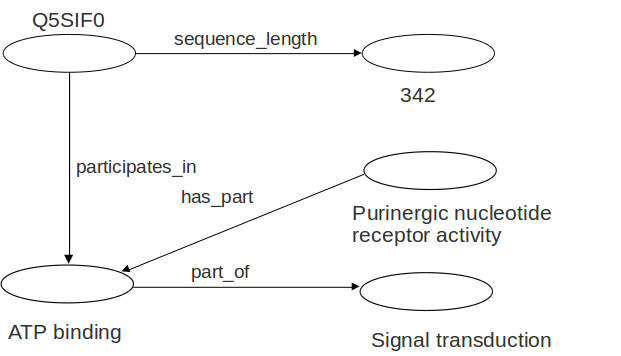

Life Sciences Semantic Web (LSSW)
Máster Bioinformática UM (2013-2014)
Mikel Egaña Aranguren
http://mikeleganaaranguren.com / mikel.egana.aranguren@gmail.com
Life Sciences Semantic Web (LSSW)
http://mikeleganaaranguren.wordpress.com/teaching/
Versión HTML de esta presentación
Todo el material (Presentación, ejercicios, datos, código) en GitHub

Life Sciences Semantic Web
Life Sciences Semantic Web

Pila tecnologías Web Semántica

Ontologías
ONTO-PERL
API para trabajar con ontologías OBO (y OWL) en Perl
http://search.cpan.org/dist/ONTO-PERL/
ONTO-PERL: Ejercicio 1
Crear un script usando ONTO-PERL que devuelva los genes de Arabidopsis thaliana que están anotados en el arbol ciclo celular (GO:0007049) de Gene Ontology
Usar los archivos gene_association.tair y go.obo
ONTO-PERL: Ejercicio 2
Crear un script usando ONTO-PERL que devuelva los genes de Arabidopsis thaliana que están anotados en el arbol ciclo celular (GO:0007049) de Gene Ontology
Usar los archivos gene_association.tair y go.obo
Ontologias en Galaxy

Ontologias en Galaxy: ejercicio 1
Recrear el ejercicio onto-perl 1, con onto-toolkit
http://biomaster.atica.um.es:8080
Linked Data
Video divulgativo
¿Qué es Linked Data (LD)?
Un método para ofrecer datos directamente en la web
Una propuesta del W3C: http://www.w3.org/standards/semanticweb/data
Un primer paso hacia la Web Semántica
LD utiliza la tecnología ya existente (URI, HTTP, ...) para ofrecer una primera versión de la Web Semántica
Pila tecnologías Web Semántica y LD

Principios LD
- Usar URIs para identificar entidades
- Usar URIs HTTP para que se pueda acceder a esas entidades
- Cuando un usuario o agente accede a una URI, proveer información útil mediante estándares (RDF, SPARQL)
- Incluir enlaces a otras URIs para que se puedan descubrir más entidades
http://www.w3.org/DesignIssues/LinkedData.html
Con LD publicamos datos de manera ...
... semántica
... enlazada
Semántica
RDF ofrece el triple, un modelo de datos explícito y homogéneo: una "frase" estándar que los ordenadores pueden "entender"

Enlaces
En el triple, cada entidad (sujeto, predicado, objeto) tiene una URI que lo identifica
Los datos son enlazados a otros datos a través de la web, con enlaces explícitos

Red global de datos enlazados

Red global de datos enlazados
Internet de datos, en vez de documentos: "Base de Datos universal":
- Es más fácil construir aplicaciones que exploten los datos, incluyendo razonamiento automático
- Encontramos justo lo que buscamos: consultas directas (SPARQL) en vez de procesar texto
Red global de datos enlazados
Navegamos directamente por las datos (RDF), en vez de navegar a través de documentos que representan esos datos en lenguaje natural (HTML)
Enlazar datos nuevos es tan fácil como enlazar páginas web: crecimiento orgánico de la red
Linked Open Data (LOD) cloud

http://richard.cyganiak.de/2007/10/lod/
{kind=link}
Datasets de interés
- Bio2RDF
- OGOLOD (¡UM!)
- LinkedLifeData
- HyQue*
- ArrayExpress and Gene expression atlas*
- UniProt
- LOD cloud ...
RDF
RDF (Resource Description Framework)
RDF es un estándar oficial del W3C para representar información en la web
Triple RDF

Grafo RDF
Un grafo RDF es un conjunto de triples

Grafo RDF
Algunos objetos pueden ser valores literales (Cadenas de caracteres)
Sujetos y predicados sólo pueden ser recursos
Los valores literales pueden tener tipo (XML Schema datatypes)

Elementos RDF
rdf:type: agrupar recursos en clases

Elementos RDF

URIs en RDF
Cada recurso (Sujeto, predicado, objeto) tiene una URI
URI: Uniform Resource Identifier (RFC3986)
Reference URI: URI + fragment (http://foo/bar#frag)
(En Linked Data, las URIs se pueden resolver, es decir de-referenciar)
Espacios de nombres XML
RDF usa espacios de nombres XML mediante "qualified names"
Vocabulario: URIs bajo un espacio de nombre
- rdfs="http://www.w3.org/2000/01/rdf-schema#"
- obo="http://purl.org/obo/owl/GO#"
- owl="http://www.w3.org/2002/07/owl#"
- ...
Serializar RDF
RDF es un modelo para representar datos
Ese modelo abstracto se puede representar con diferentes sintaxis: "Serializar" (escribir) en un archivo
Una de esas sintaxis es RDF/XML
No confundir el modelo con la sintaxis: ¡RDF es mucho más que un archivo XML!
Serializar RDF
- RDF/XML (http://www.w3.org/TR/rdf-syntax-grammar/)
- RDFa (http://www.w3.org/TR/rdfa-core/)
- Turtle (http://www.w3.org/TR/turtle/)
- N3 (http://www.w3.org/DesignIssues/Notation3.html)
- ...
Serializar RDF: RDF/XML


Vocabulario (ontología) / triples